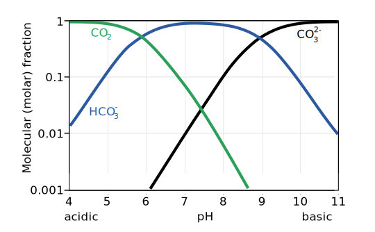
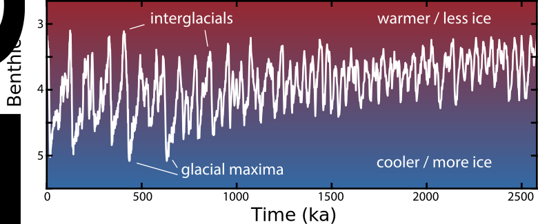

Earth's climate in "Deep Time"
Week
GEOS 3410
Week Schedule
Tuesday
- Ice core presentations
- Ancient climate
- snowball glaciations
Thursday
- Less ancient climate
- Paleocene-Eocene Thermal Maximum/Anomaly
- Cenozoic cooling
Outside of class
- Week reading (syllabus)
- Wrap-up/review in-class activities
- Term paper outline [Nov. 1] — 5pm Friday
No class next Tuesday:
Go vote (down-ballot matters!) and look after yourself & friends.
Term paper outline
- All arguments, ideas, and information of the final paper
- Cite every source you plan to cite
- Alphanumeric formatting: I, II, III → A, B, C → 1, 2, 3 → a, b, c
- ≥25% on the physical climate processes underlying your topic
- ≥25% on solutions (both adaptation & mitigation)
Friday Nov. 1 by 5pm (Canvas/Analog)
Ancient Climate
Faint young sun
The Sun's luminosity (red) was ∼30% dimmer in Earth's early history.

≪10% changes drive glacial periods in the modern
Anoxic young Earth
Atmospheric oxygen appears after 2 Ga, and abundant after 1 Ga.Other GHGs available in anoxia:
methane (CH4), ethane (C2H6)
Adapted from: H. Holland (Wikimedia)
Diamictites & dropstones as early as 2.9 Ga
Diamictite
lithified, poorly-sorted sediments.(tillites = glacial diamictite)


Paleogeography from paleomagnetism
Magnetic minerals record the magnetic field inclinations when they form.
Magnetic field line inclinations vary with latitude.
Paleomagnetic orientations record paleolatitude → paleogeography
The Marinoan Glaciation (650–630 Ma)
☆ = (near) glacial deposits
Glacial deposits spanning the tropics to mid-latitudes

Snowball Earth glaciation

(Overall) accepted snowball glaciations
| Age | Event |
|---|---|
| 650–630 Ma | Marinoan glaciation |
| 720–660 Ma | Sturtian glaciation |
| 2.4 Ga | Huronian glaciation |
Banded Iron Formations (BIFs)
Banded Iron Formations (BIFs)
- Alternating bands of iron-poor red chert (SiO2) and gray iron oxides (Fe3O4, Fe2O3)
- üíß Aqueous environment üíß
- Ferrous iron (Fe2+) is soluble, ferric iron (Fe3+) is insoluble
- →→→ Intermittent oxygenation of anoxic waters

.svg){kind=link}
{kind=link}
{kind=link}
After oxygenation (∼2 Ga), BIFs return only during Cryogenian Period (720–635 Ma)

{kind=link}
Ice sheets a significant source of iron today
[ghe]
Blood Falls, Taylor Valley, Antarctica
üßä Entering Snowball Earth üßä
Entering Snowball Earth
Inorganic carbon (carbonate-silicate) cycle

Entering Snowball Earth
Hypothesize a scenario that leads to runaway glaciation, given:
- Continents concentrated at low latitudes
- Extensive continental shelf environments
- Silicate weathering outpaces volcanic outgassing
- Low mid-ocean ridge CO2 flux (Dutkiewicz+ 2024)
- Paleoproterozoic: Fainter Sun and greater reliance on GHGs (Huronian glaciation)
☆ = (near) glacial deposits
Hoffman+ 2017
Hoffman+ 2017
Escaping Snowball Earth
Escaping Snowball Earth
Inorganic carbon (carbonate-silicate) cycle
What part of the system is broken, now?
Escaping Snowball Earth
Overlying cap carbonate: ∼ 10 m thick, deposited in < 1000 years

Basal diamicton with ice-rafted debris
Variations on a snowball
- Snowball: continents and oceans completely glaciated
- Slushball: tropical to mid-latitude ocean/puddles
- Jormungand (Waterbelt): narrow thawed ocean belt that shifts seasonally
Image: Bindeman & Lee 2018

Less ancient climate
δ18O as a measure of hot/cold climates

Cenozoic Climate (66 Ma to present)

Gradual cooling trend across Cenozoic (More on this later!)
Data from: Zachos+ 2001
Paleocene-Eocene Transition
Carbonate shelf (calcareous ooze) sediments in Paleocene and Eocene interrupted by a pulse of carbonate dissolution that gradually recovered.
→ Time →
Paleocene
Eocene

Paleocene-Eocene Thermal Maximum (PETM)

Data from: Zachos+ 2001, dates corrected after Li+ 2022
Paleocene-Eocene Thermal Maximum (PETM)
- 200 kyr event
- Global temp. ↑ 6°C
- Dramatic change in marine carbonates (lithology & δ13C)
- Major environmental changes (Week 13)
Data from: Zachos+ 2001, dates corrected after Li+ 2022
Stable carbon isotopes
Stable carbon isotopes
98.9%

1.1%
Stable carbon isotopes
dell-C thirteen, dell-thirteen-C, delta-C, delta-carbon, … carbon
ü¶ë Vienna Pee Dee Belemnite (VPDB) ü¶ë
$\frac{^{13}\text{C}}{^{12}\text{C}} = 0.011100 \pm 0.000026 ~~(2\sigma) $Carbon fractionation … by life.
Biological reactions preferentially incorporate lighter C (12C)
üå± & ü¶†
❤️
And heterotrophs eat the low-δ13C producers!
C fractionation by photosynthesis

{kind=link}
In C4 plants, an extra step allows CO2 to convert to HCO3- in the plant. This favors incorporation of...
All the carbon fractionation

The carbon fractionation you should know
| Source | δ13CVPDB (‰) |
|---|---|
| Marine carbontes | ∼0 |
| Volcanism/air | −12 to −2 |
| Photosynthesis (most biomass) | −30 to −15 |
| Methane (biotic/aboitic) | −60 to −30 |
Reconstructing the PETM
Where does the isotopically light C come from?
Data from: Zachos+ 2001, dates corrected after Li+ 2022
The Carbon Isotope Excursion (CIE)
Varies from site to siteOn average, Δδ13C= −4‰
Δδ13CCIE= −4‰
Volcanism?
üåã δ13Cvolc= −8‰ üåã

Δδ13CCIE= −4‰
(Marine) organic carbon?
ü¶† δ13Corg-C= −24‰ ü¶†

Oxidation (org-C → CO2) of a dried sea/marine basin
Δδ13CCIE= −4‰
Methane
üßä δ13CCH4= −60‰ üßä
Clathrate
(CH4 within H2O ice)

Permafrost

Isotope Mass Balance
For δ13C values $\delta$ and reservoir masses $M$ for reservoirs $A,B,\dots$ $$\delta_A~M_A + \delta_B ~ M_B + \dots = \delta_{total} ~ M_{total}$$ $$ where~M_{total} = M_A + M_B + \dots$$| Reservoir | Mass (GtC) | δ13C (‰) |
|---|---|---|
| Biomass | 600 | −24 |
| Atmosphere | 800 | −6 |
| Marine carbonate | 40,000 | +1 |
What is the combined δ13C of the surficial C reservoirs? δt = …
Isotope Mass Balance
How much C ($M_*$) would each source need to release to reproduce the CIE?
$$\delta_*~M_* + \delta_t ~ M_t = (\delta_t-4‰) ~ (M_t + M_*) $$
| Source ($*$) | δ13C (‰) |
|---|---|
| üåã volcanoes üåã | − 8 |
| ü¶† marine organic C ü¶† | −24 |
| üßä methane (clathrates/permafrost) üßä | −60 |
Temperature response to C release
3000 GtC → +700 ppm CO2
δ18O excursion → 6°C warming
A very rough estimate

Duration of greenhouse forcing:
CO2 vs. CH4
What about the sudden disappearance of marine shelf carbonate at the PETM?

Paleocene
Eocene
{kind=link}
Aqueous (e.g. ocean) carbonate system
\[\begin{aligned} \text{H}_2\text{O} + \text{CO}~_{2~(aq)} ~&\longleftrightarrow~ \text{H}_2\text{CO}_3 \\\\ \text{H}_2\text{CO}_3 ~&\longleftrightarrow~ \text{H}^{+} + \text{H}\text{CO}_3^- \\\\ \text{H}^{+} + \text{H}\text{CO}_3^- ~&\longleftrightarrow~ 2~\text{H}^{+} + \text{CO}_3^{2-} \\\\ (\text{H}_2\text{O} ~ &\longleftrightarrow ~ \text{H}^+ + \text{OH}^-) \end{aligned}\]$$\text{Ca}^{2+} + \text{CO}_3^{2-} \longrightarrow \text{CaCO}_3$$
Aqueous (e.g. ocean) carbonate system
$$ \text{H}_2\text{O} ~\longleftrightarrow ~ \text{H}^+ + \text{OH}^- $$| Excess of H+ | acidic | pH < 7 |
| Excess of OH− | basic | pH > 7 |
$$
\text{H}_2\text{O} + \text{CO}~_{2~(aq)}
\leftrightarrow
\text{H}_2\text{CO}_3
\leftrightarrow
\text{H}^{+} + \text{H}\text{CO}_3^-
\leftrightarrow
2~\text{H}^{+} + \text{CO}_3^{2-}
$$
Aqueous (e.g. ocean) carbonate system
Aqueous (e.g. ocean) carbonate system
- ↑ pH (↓ H+)… eqn. moves →
- ↓ pH (↑ H+)… eqn. moves ←
- ↑CO2 → ↑ H+ → ↑ pH
Calcite solubility
Calcite tends to dissolve (rather than precipitate) as …| ↓ pH ↓ |
| ↓ Temperature ↓ |
| ↑ Pressure ↑ |
| ↑ Salinity ↑ |
So, where in the ocean is calcite least stable?
Calcite compensation depth (CCD)
CaCO3 ⇆ Ca2+ + CO32-

- Calcite precipitates near the surface and gradually sinks
- Above CCD, seawater is saturated with respect to calcite
- Below CCD, calcite (net) dissolves
- Lysocline: calcite dissolution ↑↑
What does an abrupt halt in global calcite deposition tell us?
The CCD shoaled (shallowed/rose up) due to ocean acidification from ↑↑ atm-CO2
Foraminiferal "disaster taxa" precedes (found below) the CIE and dissolution pulse

What does this mean???
Entering the modern ice house climate
Cenozoic cooling
Data from: Zachos+ 2001
Cenozoic cooling
Data from: Zachos+ 2001
| Date, Ma | Event |
|---|---|
| 34 | Antarctica glaciates (Eocene-Oligocene) |
| 26–14 | Early Miocene warmth |
| 14 → | Antarctic ice sheet returns! |
| <5 | N Hemisphere ice sheets (Pliocene) |
Atmospheric carbon over the Cenozoic
Falling CO2 → cooling… What drives falling CO2?

Mountain ranges → intense weathering

Tibetan plateau uplift began in Cenozoic…
Uplift → silicate weathering → CO2 drawdown
{kind=link}
Quaternary: last 2.58 Ma
Lowest CO2, coldest T, most ice, climatologicaly noisy.
Data from: Zachos+ 2001
Quaternary: last 2.58 Ma
Why?
Data: Lisiecki+Raymo 2004
Next Week ()
- Week reading (syllabus)
- Tuesday: No class.
- Go vote — down-ballot matters!
- Take good care of yourself
- Look after your friends
- Thursday: Cenozoic to Quaternary climate history (üòç)
- Term paper outline [Nov. 1] — 5pm Tomorrow